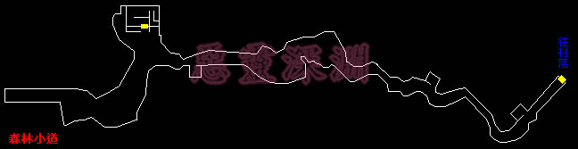
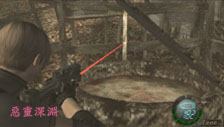
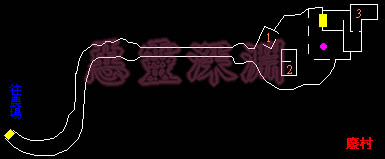

|
惡靈古堡～惡靈古堡４----地圖攻略～1-1
|
|
攻略內容以Normal為主，地圖上的紫色圓點●表示高價寶物的位置
 遊戲一開始，不要因為太興奮而衝得太快，先將前方不遠處的幾隻烏鴉一個個擊斃，在歷代中煩人的烏鴉卻因為會掉落寶物而在四 代格外討人喜歡。進入住宅後，突然被村民攻擊，趕緊用手槍將他的頭打爆，此時外面似乎另有騷動，門被堵住了，只有從窗口出 去，除了一樓的窗口，二樓也有一個，而且二樓還有手槍彈可拿。到屋外解決村民後，別漏掉屋旁的小箱子。 此時回到吊橋附近發現搭乘的車子已經墜落了，只好繼續往前走。這條通往村落的森林小道上，有三間小屋，將裡面的箱子用小刀 擊破來拾取道具。 途中聽到狗的哀鳴聲，先解決烏鴉之後，靠近狗按行動鈕作出幫助，牠日後會有所回饋。如果在解決烏鴉的時候使用了閃光彈，狗 會因為受到驚嚇而自行逃脫，這樣的話牠日後並不會幫助Leon。 附近的草叢有一些捕獸夾陷井，前進時要特別小心。困住狗的捕獸夾往前一點的角落有紅色藥草。 來到一個寬廣的轉角時，注意有兩條炸藥引爆線，可以引誘後面的村民接近後用手槍在遠處引爆，或是置之不理小心通過。
村落入口處用望遠鏡看到一名警官被懸掛在火堆上示眾，行動被村民們發現之後，必須經過約六分鐘或是打倒一定數量的敵人， 這些村民才會散去，而想要賺取更多金錢的玩家，可以引誘出電鋸男並將他打敗。第一隻的位置在往農場的門前，打倒後拿取高價 寶物ルビー（紅寶石），接著進入編號1的民宅，引誘出第二隻電鋸男，二樓可拿到散彈槍來對付他。 沒有把握的玩家可以跑給村民們追，且不要觸發電鋸男出現。在編號5的高塔，如果玩家待在上面會被汽油瓶攻擊，而且這些村民 們並不會爬這個梯子。 六分鐘時間一到，村落的鐘聲忽然響起，所有村民彷彿中了邪般全都撤離，終於可以好好調查這個村落。因為從村民身上掉落的道 具會隨著時間而消失，所以先去把這些東西拾起，再慢慢逐步搜索村落，編號6的屋子有村落的警戒命令。之後往農場。
農場上有幾個村民，數量不多，小心應付即可。地圖編號1的地方有個臭水井，上方掛著閃閃發亮的東西，先觀察一下，發現水井 上架著一個木板，用手槍瞄準木板的支架射擊，使水井蓋上，再將上方的寶物擊落，就可以拿到真珠のペンダント（珍珠掛飾）， 若是沒將木板蓋上，則是拿到真珠のペンダント＿臭（珍珠掛飾＿臭），兩個寶物的價值差了十倍。
 水井對面的大樹上貼著一張〈射擊"藍色錢幣"〉，文件的上面就掛著一枚，用手槍擊破吧。農場中共有七枚藍色錢幣，對照地圖上 的藍點，一一找出擊破，擊破一定數量可以換獎品。 農場上的雞會隨機生出顏色不同的蛋，說不定還會有可以恢復全部生命值的金蛋，看到的話趕快去收集。 從編號2的農舍爬上二樓，由窗戶出去，出去後觀察右前方的地面，看到有個木箱，跳下去拿木箱中的寶物くぼみのあるステイン （有凹槽的啤酒杯），之後推動櫃子離開。 將整個農場探索結束後，前往廢村。
 來到這個地圖，前進沒幾步，就遇上村人推巨石想輾死Leon的事件，除了要趕緊連打提示的行動鍵逃離，也要特別小心最後要按一 次複合按鍵。順利躲過之後繼續前進，會先經過一條長長的隧道，上面有幾顆寶石用槍擊落來撿取。通過隧道後，前方的民宅有村 民丟炸藥攻擊，殺傷力很大，最好在炸藥丟出來前把它擊爆，可以躲在編號1的房子來進行，但別忽略從另一個門來偷襲的村民以 及地上的捕獸夾。 編號2的房子從窗戶跳入，拾取一些道具。 高價寶石的位置在樹上的鳥巢中，用槍擊落取得ステインの宝石＿赤（啤酒杯的寶石＿紅）。調查結束後就進入編號3的房子吧， 不要衝太快以免漏看設置在此的炸藥，中途的路會被一個櫃子掩飾起來，推開來前進。調查最裡側似乎有什麼在裡面的衣櫃，本章 節就結束了。
疑難解答
真珠のペンダント（珍珠掛飾） 10000ptas 真珠のペンダント＿臭（珍珠掛飾＿臭） 1000ptas くぼみのあるステイン（有凹槽的啤酒杯） 3000ptas ステインの宝石＿赤（啤酒杯的寶石＿紅） 3000ptas 組合──有凹槽的啤酒杯 ＋ 啤酒杯的寶石＿紅 ＝ ステイン＿赤（啤酒杯＿紅） 10000ptas 在1-2開始時就會碰到武器商人，可以和他交易買賣，把高價寶物賣掉來擴充裝備，但是建議可以組合來提高售價的寶物最好 先留著，別賤賣了。
現「白光」，這種道具不會因為時間而消失，就算轉換場景，也還會留在現場。 「紅光」、「綠光」、「藍光」的道具會隨著時間而消失，應該要優先回收，通常是從敵人身上掉落 ，紅光代表武器彈藥、綠光代表回復道具、藍光代表金錢。 未經許可禁止轉載連結 |
惡靈深淵Biohazard Abyss http://98.to/coolbio